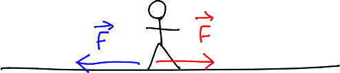
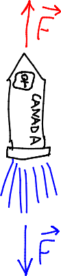
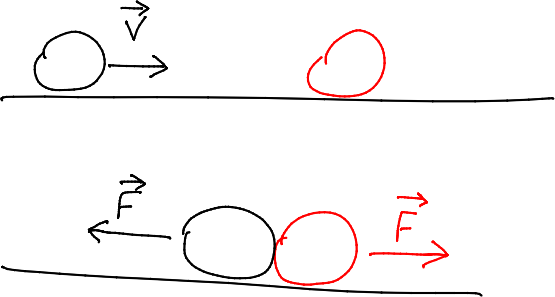

Force
A force is an interaction between two objects.
- When you push on an object (action), the object pushes back on you (reaction).
Newton observed that:
- the action and reaction always occur together,
- they are equal in magnitude,
- they act in opposite directions.
Newton’s 3rd Law: For every action (force), there is an equal and opposite reaction force:$${\vec{\mathbf F}}_{AB} = -{\vec{\mathbf F}}_{BA}$$
- When you walk or run, you make the ground push you forward by push backward against the ground.

- When you climb a rope, you cause the rope to exert an upward force on you by exerting a downward force on the rope.
- Jet and rocket propulsion work by forcing gas out the “back” of the engine, causing the gas to propel the vessel forward.

- Since Earth exerts a gravitational force on you, you must exert an equal gravitational force on the Earth!
Example
In a game of billiards, a cue ball with a mass of 300 grams is moving at 5.00 m/s when it collides head on with a stationary ball of mass 250 g. The balls are in contact with each other for 0.200 seconds, after which the cue ball’s velocity is 2.00 m/s.
a) How much force did the cue ball experience?

$$\vec{\mathbf a} = {\vec{\mathbf v}_f - \vec{\mathbf v}_i \over \Delta t} = \mathrm{{2.00\ m/s - 5.00\ m/s \over 0.200\ s} = -15.0\ m/s^2}$$
$$\vec{\mathbf F} = m\vec{\mathbf a} = \mathrm{0.300\ kg\cdot (-15.0\ m/s) = -4.50\ N}$$
b) What was the second ball’s velocity after the collision?
According to Newton’s 3rd Law, the second ball experienced a force of +4.50 newtons...
$$\vec{\mathbf a} = \vec{\mathbf F} / m = \mathrm{{+4.50\ N\over 0.250\ kg} = +18.0\ m/s^2}$$
To find the final velocity, solve one of the uniform accelerated motion equations...
$$\begin{align}\vec{\mathbf v}_f &= \vec{\mathbf a}\Delta t + \vec{\mathbf v}_i\\ &= \mathrm{{+18.0\ m/s^2\cdot 0.200\ s + 0.00\ m/s}}\\ &= \mathrm{+3.60\ m/s}\end{align}$$